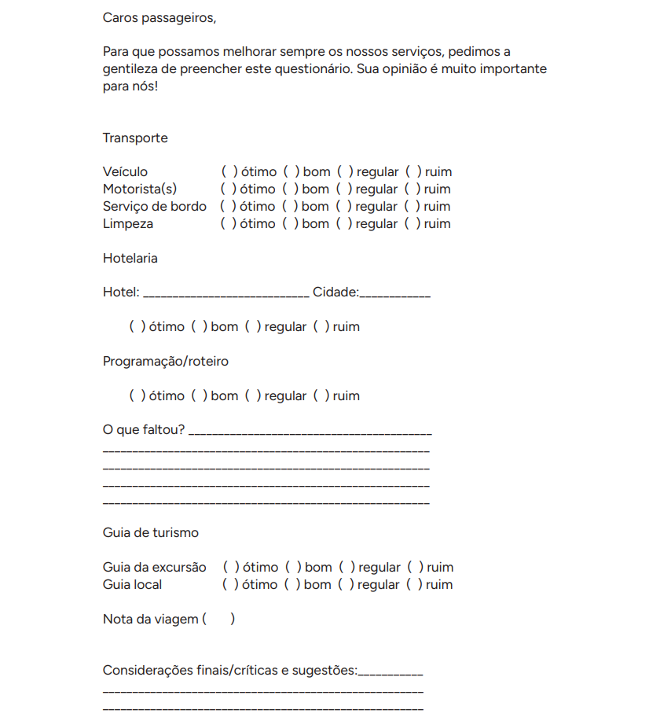

Atenção: este conhecimento contém diversos exemplos em PDF para download na versão digital. Assim, para imprimir o arquivo em PDF desejado, acesse a tela inicial do curso e clique no botão de impressão, na opção “Modelo de documentos de relatório e prestação de contas”. Nela constam todos os exemplos em PDF que estão também disponíveis no conteúdo digital.
Relatório final e prestação de contas: elaboração e organização de documentos
Para garantir a excelência do serviço e fortalecer a relação profissional com as agências de turismo, o guia de turismo deve adotar práticas organizadas e transparentes no encerramento de cada viagem.
Elementos como o relatório de viagem, a prestação de contas, o opinário e a lista de documentos a serem entregues ou recebidos pós-viagem desempenham um papel fundamental nesse processo. Eles asseguram que todos os aspectos operacionais e administrativos da viagem sejam registrados, analisados e compartilhados de forma clara, contribuindo para a melhoria contínua dos serviços.
Outro ponto indispensável é o recebimento da diária, que deve ser tratado com a mesma seriedade, garantindo que os acordos firmados previamente sejam cumpridos de maneira justa e profissional. A boa gestão dessas etapas não apenas reforça a confiança entre o guia e a agência, mas também projeta o guia como um profissional comprometido com a qualidade e o desenvolvimento do turismo.
O guia de turismo está presente durante toda a organização de uma viagem, e todo o processo pode ser dividido, superficialmente, em pré-viagem, viagem e pós-viagem. Em cada um desses momentos, o profissional terá responsabilidades únicas, específicas e essenciais. Quando a viagem termina, o guia de turismo presta a assistência necessária aos passageiros e finaliza o seu serviço, porém, as suas responsabilidades não se encerram aí.
O guia de turismo desempenha um papel imprescindível na finalização de uma viagem. Na etapa pós-viagem, ele contribui diretamente para a avaliação da qualidade dos serviços prestados e para a melhoria contínua dos processos. Como figura central durante toda a viagem, o guia é a pessoa mais qualificada para fornecer à empresa feedback detalhado sobre os destinos visitados, a interação com os prestadores de serviços e a experiência dos turistas.
Este material abordará cada um desses tópicos de forma detalhada, oferecendo ferramentas e práticas essenciais para que o guia de turismo desempenhe suas funções com excelência e organização.
Relatório de viagem
O relatório de viagem tem como objetivo documentar as atividades realizadas durante a viagem. As diferentes formas de comunicação podem ser usadas para coletar informações, mas o ideal é consolidar tudo em um documento escrito (digital ou impresso), sendo a forma mais organizada e profissional de apresentar um relatório.
O relatório de viagem é um relato detalhado da viagem. Ele deve informar com exatidão e clareza sobre todos os eventos da experiência, incluindo detalhes sobre ocorrências e problemas enfrentados, bem como sobre as medidas tomadas para solucioná-los.
O relatório é elaborado pelo guia para ser entregue ao fim de cada viagem. Portanto, procure ser claro, objetivo e exato ao escrevê-lo. Esse documento pode ser uma ferramenta útil para alterar algum ponto da programação ou para elaborar outras excursões.
Chimenti e Tavares (2007) alertam que o guia de turismo é o único funcionário vinculado à agência que tem acesso direto aos fornecedores no instante em que estão prestando os serviços. Situações como atrasos ou dificuldades relativas à prestação de serviços devem ser mencionadas no relatório.
O relatório é um documento importante, pois é por meio dele que se poderá avaliar o desempenho dos fornecedores e dos parceiros envolvidos na prestação de serviços.
Este é um modelo de relatório de viagem, adaptado de Chimenti e Tavares (2007, p. 117). Ele estará disponível para download ao final deste conhecimento.
Este é outro modelo de relatório.
Este é outro modelo de relatório, que também estará disponível para download ao final deste conhecimento.
O relatório deve oferecer uma análise detalhada dos fornecedores, permitindo que a empresa avalie a qualidade dos serviços prestados e identifique oportunidades de melhoria. Com base na sua avaliação, a empresa pode decidir ajustar elementos do roteiro, como hotéis, restaurantes ou locais de paradas técnicas, para aprimorar a experiência dos turistas.
Compile os resultados de forma clara e objetiva, destacando os pontos positivos e apresentando sugestões de melhoria, e entregue o relatório à agência para contribuir com o aprimoramento contínuo dos serviços.
Relate todas as ocorrências da viagem (problemas e soluções encontradas) e narre a sua versão. A mesma situação pode ser relatada na avaliação (opinário) da viagem, que é preenchida pelos turistas, e nela constará a versão deles dos fatos.
O relatório deve ser entregue à agência no máximo uma semana após o término da viagem, para finalizar os seus serviços. Após a viagem, além de entregar relatório, uniformes e outros materiais (se houver), é preciso prestar contas dos valores recebidos na etapa de pré-viagem.
Além disso, algumas ferramentas, como o WhatsApp, podem ser usadas para comunicação rápida durante a viagem e com elas obter informações ou resolver problemas. No entanto, informações relevantes devem ser posteriormente registradas no documento formal e enviadas para a agência.
Prestação de contas
Ao receber os valores dos pagamentos, os quais podem ou não estar separados por despesa (hotel, restaurantes, cafés, shows etc.), sempre os confira. Qualquer dúvida deve ser solucionada no momento da entrega dos valores, ou seja, antes da viagem, para que não haja problemas na finalização dos procedimentos com a agência/operadora.
Conforme a programação estabelecida em cada viagem, a empresa entrega determinado valor para o guia antes da saída, para que ela faça o pagamento de despesas programadas e não programadas do grupo, como ingressos, refeições, passeios incluídos e tudo o que constar como incluído no roteiro e não puder ser pago antecipadamente pela agência/operadora por depósito.
É responsabilidade do guia de turismo confirmar serviços, fazer pagamentos e receber comprovantes com os fornecedores para a prestação de contas. Além disso, ele receberá valores para despesas que, por motivos diversos, possam surgir na execução do roteiro. Por isso, deve sempre pegar comprovantes, recibos e notas fiscais, para apresentá-los posteriormente.
No documento descritivo devem constar todos os valores gastos durante a viagem, juntamente com as notas fiscais de cada débito e o restante do dinheiro que o guia recebeu antes da viagem para previstos e imprevistos. A prestação de contas é fundamental para comprovar os gastos e a correta utilização dos recursos, seja qual for a forma de pagamento.
Guarde sempre a via original do voucher, que comprova o pagamento antecipado de um serviço (hospedagem, transporte, atração etc.). Faça uma cópia para seus arquivos, caso o original se danifique ou se perca. Anote no voucher ou em um documento anexo informações como data, serviço utilizado, nome do cliente e valor pago.
Para pagamento em dinheiro, emita um recibo com seu nome, CPF, nome do cliente, serviço prestado, data e valor recebido, e o cliente deve assinar uma via e você deve guardar a outra. Mantenha um controle de caixa diário ou por viagem, registrando todas as entradas e saídas de dinheiro.
Guarde os comprovantes de cada transação com cartão, sejam eles impressos ou digitais. Os extratos bancários também servem como comprovante de recebimento, mostrando a data e o valor da transação. O modelo de documento de prestação de contas a seguir, baseado em Chimenti e Tavares (2007, p. 118), é um exemplo de como você pode manter esse controle. O documento estará disponível para download ao final deste conhecimento.
Esse modelo de documento pode auxiliá-lo a fazer uma prestação de contas de maneira organizada e responsável, para que você demonstre o seu profissionalismo e inspire confiança em quem o contratou. Lembre-se de que você deve devolver ainda à agência os opinários preenchidos pelos passageiros e todo o material de recreação, alimentação ou divulgação que tenha sobrado.
Realizando todos os procedimentos finais no prazo estipulado, você contribuirá para uma finalização perfeita da viagem realizada. Busque sempre seu aprimoramento e seja um elo importante entre a agência/operadora, os passageiros e os prestadores de serviço.
Opinário
O opinário é uma ferramenta de extrema relevância para os guias de turismo, as agências e outros profissionais do setor. Trata-se de um instrumento usado para coletar feedback dos viajantes sobre a experiência vivida durante um passeio ou uma excursão. Ele pode ser apresentado física (questionários impressos) ou digitalmente (formulários on-line), e os dados coletados, como já mencionado antes, ajudam a avaliar a qualidade dos serviços oferecidos e a identificar oportunidades de melhoria.
O opinário é utilizado para que a agência possa avaliar a programação realizada e a satisfação dos passageiros com relação ao roteiro executado. Os comentários fornecem insights para ajustes nos roteiros, comunicação e planejamento futuro, e resultados positivos podem ser usados como prova social para atrair novos clientes. Além disso, essas avaliações apontam situações ou serviços que podem ter causado insatisfação, como atrasos, falhas no transporte ou na infraestrutura dos passeios. A partir das informações obtidas no opinário, é possível também implementar mudanças sugeridas pelos passageiros, como alterações no roteiro ou nos serviços prestados.
Confira um modelo adaptado de Chimenti e Tavares (2013). O seguinte documento estará disponível para download ao final deste conhecimento.
Modelo de opinário
O que entregar e receber à agência pós-viagem
Ao final de uma viagem, o guia de turismo deve organizar e entregar à agência uma série de documentos, equipamentos e relatórios. Esses itens são fundamentais para garantir a transparência, facilitando o fechamento administrativo do passeio.
Portanto, crie uma checklist de pós-viagem para não esquecer algum documento ou alguma etapa de entrega. Isso reforça a confiança entre o guia e a agência, consolidando uma relação profissional de qualidade. Por exemplo, uma checklist pode conter o seguinte:
- Lista de passageiros: essencial para registro e controle da viagem
- Pagamento: pode ser feito antes da viagem, dependendo da negociação
- Opinário (físico ou digital): resultado do questionário e de eventuais comentários dos pax (abreviação da palavra “passageiro” – em inglês, passengers)
- Relatório de viagem
- Relatório financeiro para a prestação de contas
- Documentos de prestadores de serviços
- Materiais de apoio (de escritório e de lazer)
- Uniforme (caso haja)
Recebimento da diária
O recebimento da diária é uma etapa essencial para finalizar a relação de trabalho entre o guia de turismo e a agência ou contratante após a realização de uma viagem ou de um passeio. Essa remuneração representa o valor acordado pelo serviço prestado e pode incluir variações, como adicionais por horas extras, deslocamentos ou outros elementos previamente combinados. Para que esse processo seja concluído de maneira justa e transparente, é fundamental que o guia siga algumas práticas e entenda seus direitos e suas responsabilidades.
O recebimento da diária deve ser acordado previamente com o contratante. O pagamento pode ser feito com dinheiro, transferência bancária etc. e o valor deverá ser pago antecipado, após o término da viagem ou metade antecipado e a outra metade após a viagem. Se o serviço ultrapassar a carga horária contratada, é importante negociar previamente o valor das horas extras.
Alguns contratos preveem adiantamentos para cobrir despesas iniciais, como deslocamento até o ponto de partida. O custo de deslocamento para que o guia chegue ao local do trabalho pode estar incluso ou ser negociado separadamente. Antes de solicitar o pagamento, entregue à agência todos os documentos pós-viagem organizados: relatório final da viagem, detalhando atividades realizadas e observações relevantes; lista de passageiros atualizada, caso tenha havido alterações; relatório financeiro, se o guia lidou com valores adicionais (passeios opcionais, taxas extras etc.).
Caso o pagamento não seja imediato, envie um e-mail ou documento formal solicitando o valor. Inclua no pedido: valor acordado, eventuais adicionais (horas extras, despesas reembolsáveis etc.) e dados bancários para transferência, se aplicável.
Se houver atrasos ou problemas no pagamento, é importante adotar uma abordagem profissional. Guarde todos os registros relacionados ao acordo inicial e à solicitação de pagamento, entre em contato com a agência de forma educada e direta, buscando resolver a situação e, se for necessário, procure apoio em associações ou sindicatos de guias de turismo para orientações sobre os seus direitos.
É importante e imprescindível ter um contrato ou acordo por escrito que especifique os valores acordados e quando serão pagos. O recebimento da diária do guia de turismo é mais do que uma etapa final da viagem, é um reflexo do profissionalismo e da organização do trabalho. Garantir que todos os processos sejam claros, formais e bem-documentados assegura que o guia seja valorizado pelo serviço prestado e fortaleça a parceria com a agência contratante. Com planejamento e comunicação eficaz, o guia pode concluir seu trabalho de forma satisfatória, abrindo portas para futuras oportunidades de trabalho no setor.
Clique ou toque no botão a seguir para fazer o download dos arquivos disponíveis neste conhecimento.
BaixarEncerramento
A rotina de um guia de turismo não se encerra com o último destino visitado ou com a despedida do grupo. O trabalho pós-viagem é uma etapa igualmente imprescindível, na qual a organização, a comunicação e a transparência são colocadas à prova. Desde a elaboração do relatório de viagem, passando pela prestação de contas, até a análise do opinário, cada tarefa é uma oportunidade de reforçar a confiança e o profissionalismo.
Entregar à agência todos os documentos necessários, como listas de passageiros atualizadas, vouchers e relatórios financeiros, demonstra cuidado e responsabilidade. Ao mesmo tempo, receber a diária acordada de forma clara e justa sela a relação profissional com ética e comprometimento.
Essas práticas não apenas fortalecem a parceria entre guias e agências, mas também refletem diretamente na qualidade dos serviços oferecidos aos viajantes. Com planejamento e atenção aos detalhes, o guia de turismo destaca-se como um profissional indispensável para a experiência turística, contribuindo para um mercado cada vez mais organizado e valorizado.
O cuidado com esses processos garante que cada viagem seja não apenas uma experiência memorável para os passageiros, mas também uma base sólida para futuras oportunidades e crescimento na carreira do guia.